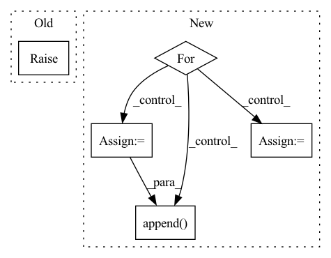

Pattern ID :2789
Before Change
elif self.combining_operation == "sum":
e = iid_embeddings.sum(dim=1)
else:
raise ValueError("combining_operation must be in ["sum", "mean"].")
embedding = self.fc_subnet(e)
After Change
else:
combined_embedding = []
trial_counts = torch.zeros(batch, 1)
for i in range(batch):
// remove NaNs
valid_x = x[i, ~torch.isnan(x[i, :, 0]), :]
trial_counts[i] = valid_x.shape[0]
trial_embeddings = self.trial_net(valid_x)
// apply combining operation over permutation dimension
combined_embedding.append(
self.combining_function(trial_embeddings, dim=0)
)
combined_embedding = torch.stack(combined_embedding, dim=0)
assert not torch.isnan(combined_embedding).any(), "NaNs in embedding."In pattern: SUPERPATTERN
Frequency: 3
Non-data size: 5
Instances Fragment ID: 9198376
Project Name: mackelab/sbi
Commit Name: 1352e77bdbc47aa4a4130679903b57672e48218c
Time: 2023-03-01
Author: jan.boelts@tum.de
File Name: sbi/neural_nets/embedding_nets.py
M Class Name: PermutationInvariantEmbedding
N Class Name: PermutationInvariantEmbedding
M Method Name: forward(2)
N Method Name: forward(2)
M Parent Class: nn.Module
N Parent Class: nn.Module
M File Name: sbi/neural_nets/embedding_nets.py
N File Name: sbi/neural_nets/embedding_nets.py
M Start Line: 271
M End Line: 284
N Start Line: 277
N End Line: 304
Before Change
def forward(self, x, **kwargs):
// input: T frames: [b, T, c, h, w]
// output: single frame: [b, c, h, w]
raise NotImplementedError
def pred_n(self, x, pred_length=1, **kwargs):
// input: T frames: [b, T, c, h, w]After Change
// output: pred_length (P) frames: [b, P, c, h, w]
preds = []
loss_dicts = []
for i in range(pred_length):
pred, loss_dict = self.pred_1(x, **kwargs)
pred = pred.unsqueeze(dim=1)
preds.append( pred)
loss_dicts.append(loss_dict)
x = torch.cat([x[:, 1:], pred], dim=1)
pred = torch.cat(preds, dim=1) Fragment ID: 9198360
Project Name: ais-bonn/vp-suite
Commit Name: b1ebac921dc35dcaf5e5c3f9fe803c4c9e2d78f8
Time: 2022-01-14
Author: boltres@ais.uni-bonn.de
File Name: vp_suite/models/_base_model.py
M Class Name: VideoPredictionModel
N Class Name: VideoPredictionModel
M Method Name: forward(3)
N Method Name: forward(2)
M Parent Class: nn.Module
N Parent Class: nn.Module
M File Name: vp_suite/models/_base_model.py
N File Name: vp_suite/models/_base_model.py
M Start Line: 45
M End Line: 45
N Start Line: 51
N End Line: 69
Before Change
output_weights <list<torch.Tensor>>:
output_biases <list<torch.Tensor>>:
raise NotImplementedError()
class ControlConvNet(nn.Module):
def __init__(self, channels, out_channels, kernel_size, stride=None, dilated=False, separable=False, nonlinear="relu", dropout=False, norm=False):After Change
output_weights, output_biases = [], []
for idx, _ in enumerate(out_channels):
x_weights = self.fc_weights[idx](x)
x_biases = self.fc_biases[idx](x)
output_weights.append(x_weights)
output_biases.append( x_biases)
return output_weights, output_biases
class ControlStackedDenseBlock(nn.Module): Fragment ID: 9198372
Project Name: tky823/dnn-based_source_separation
Commit Name: ef24a393e941b1563617f711a1438b31488a1df3
Time: 2021-06-08
Author: 40362510+tky823@users.noreply.github.com
File Name: src/models/cunet.py
M Class Name: ControlDenseNet
N Class Name: ControlDenseNet
M Method Name: forward(2)
N Method Name: forward(2)
M Parent Class: nn.Module
N Parent Class: nn.Module
M File Name: src/models/cunet.py
N File Name: src/models/cunet.py
M Start Line: 347
M End Line: 347
N Start Line: 357
N End Line: 369